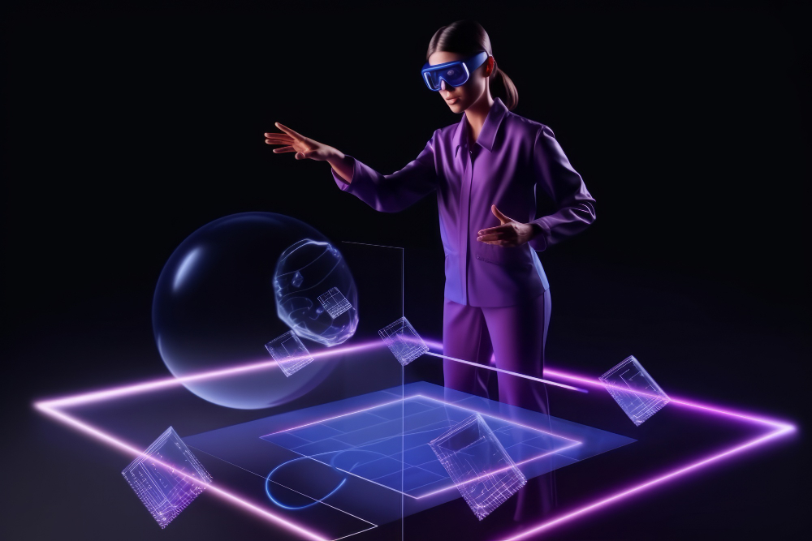

Что такое веб-дизайн в 2025 году — будущее уже здесь
🌐 Что такое веб-дизайн в 2025 году — будущее уже здесь.
В 2025 году веб-дизайн перестал быть просто «оформлением сайта». Он стал опытом, эмоцией, интеллектом. Сайт больше не просто «выглядит красиво» — он понимает тебя, адаптируется под тебя и помогает быстрее получить то, зачем ты пришёл. Это уже не про цвета и шрифты. Это — про взаимодействие, данные и будущее цифрового мира. Хотя цвета и шрифты никто конечно же не отменял.
🤖 Искусственный интеллект — новый со-дизайнер. В 2025 году AI не просто помогает — он принимает решения. Генерация макетов за секунды: ты пишешь промт — и получаешь готовый дизайн под бренд. Адаптивный интерфейс: сайт сам меняет структуру под возраст, устройство, стиль поведения пользователя. Контент под настроение: AI анализирует, как ты скроллишь — и подстраивает тон текста: формальный, дружелюбный, с юмором. Figma, Webflow, Adobe Firefly — уже встроили ИИ напрямую. Ты не рисуешь кнопку — ты говоришь: «Сделай CTA, чтобы конверсия была выше 7%» — и система сама генерирует 10 вариантов.
🧠 UX — это не про удобство, а про предсказание. В 2025 году UX-дизайн стал проактивным. Сайт не ждёт, когда ты нажмёшь — он уже знает, что ты хочешь. Пример: Ты зашёл в интернет-магазин обуви. Система видит: ты впервые, но часто смотришь на кроссовки. Через 10 секунд — появляется персонализированная подборка: «Популярное среди новичков», «Лучшее соотношение цена/качество». Через минуту — всплывает чат-бот: «Нужна помощь с выбором размера?» Это не магия. Это поведенческий анализ + ИИ + мгновенная адаптация.
📱 Интерфейсы без границ: веб, AR, голос, нейро. В 2025 году веб-дизайн вышел за рамки экрана. Голосовые интерфейсы: ты заходишь на сайт через умные часы и говоришь: «Покажи заказы за март» — и сайт озвучивает ответ. AR-превью: зашёл в магазин мебели — навёл камеру на комнату — и увидел диван в своём интерьере. Нейроуправление: в премиальных сервисах — управление взглядом (глаза = курсор). Сайт больше не «страница» — он стал пространством взаимодействия.
🎨 Дизайн: гибрид минимализма и эмоций. Визуально — 2025 год — это баланс. Минимализм — но не «пустота». Каждый элемент работает на конверсию. Глубокие цвета: тёмные темы, неоновые акценты, градиенты с текстурой. Живые анимации: не ради «эффекта», а для обратной связи: кнопка «живёт», когда ты наводишь. 3D-элементы: лёгкие, быстрые, интегрированные в интерфейс (не как «демо»). Flat-дизайн ушёл. Material Design эволюционировал. На смену пришёл Immersive Design — погружение через визуал.
⚙️ Технологии: WebAssembly, Edge, микросервисы. Сайты в 2025 году работают как приложения. WebAssembly (WASM) — позволяет запускать C++, Rust, Python прямо в браузере. Скорость — как на десктопе. Edge Computing — контент грузится с ближайшего сервера, а не из облака. Задержка — менее 10 мс. Микро-анимации — не тормозят даже на слабых телефонах. Instant Load — переходы между страницами без перезагрузки, как в нативных приложениях. SPA, SSR, SSG — уже не противопоставляются. Всё зависит от задачи — и система сама выбирает лучший способ отрисовки.
🔍 SEO и доступность — не опция, а основа. В 2025 году недоступный сайт — это плохой бизнес. Доступность (a11y) — обязательна: экраны для слепых, контраст для дальтоников, клавиатурная навигация. SEO — не только для поисковиков, но и для ИИ: ассистенты вроде Алисы или Siri достают ответы прямо из сайтов — и только если структура чистая. Скорость — не просто «меньше 2 сек», а меньше 0.5 сек до первого взаимодействия. Если сайт не проходит проверку по Lighthouse на 95+ — он не попадает в топ.
🌍 Веб-дизайн 2025 — это не про «сайт», а про «опыт». Подведём итог: Веб-дизайн в 2025 году — это проектирование цифрового опыта, где технологии, психология и эстетика работают как единый механизм, чтобы пользователь получил нужное — быстро, приятно и без усилий. Это: Не про картинки — а про поведение. Не про меню — а про предсказание. Не про «как выглядит» — а про как чувствуется.